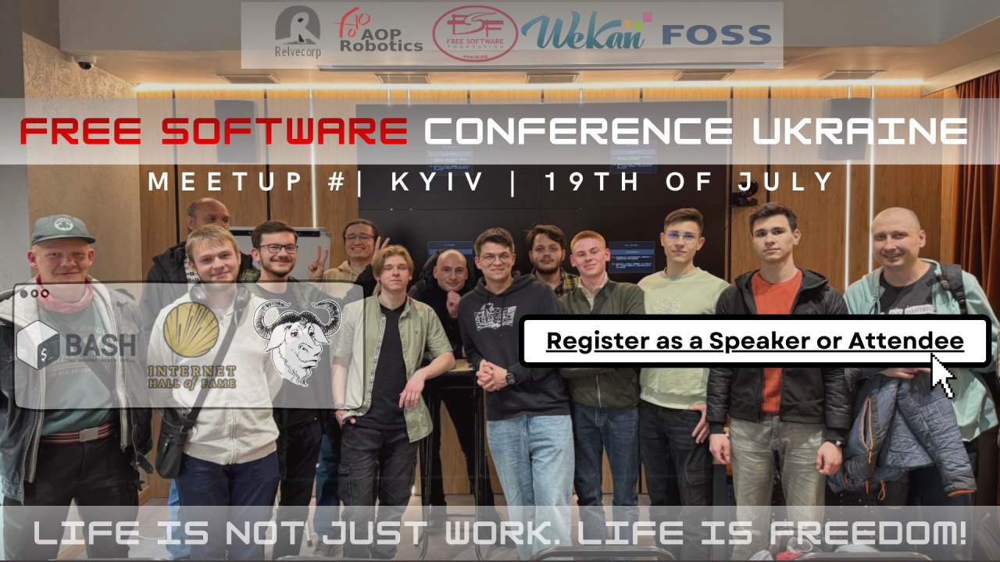
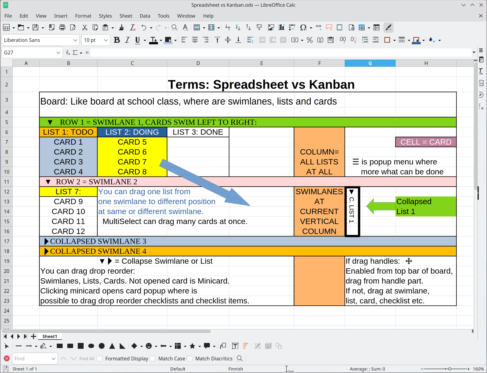

WeKan at Free Software Conference Ukraine 2026-07-19: 10 years of WeKan. Slides PDF Slides LibreOffice Impress ODP

WeKan at Free Software Conference Ukraine 2025-05-18: Webm video Slides PDF Slides LibreOffice Impress ODP Operating Systems History slide PNG
A short summary of what WeKan has. Everything below is in the current release — see the ChangeLog for when each part arrived.
| Area | What WeKan has |
|---|---|
| Board views | Swimlanes, Lists, Table, Calendar, Gantt and Stats. |
| Cards | Description, labels, members, assignees, requester and assigner, received / start / due / end dates, checklists, subtasks, custom fields, attachments, comments, activity history, card colour, stickers, location, card-to-card dependencies, copy / move / link, card templates and archive. |
| Lists and swimlanes | Collapse a list or a swimlane, drag to set list width and swimlane height, cards-per-list counter and sum of a custom number field in the list header, work-in-progress limit, and sorting. |
| Multi-selection | Copy, move or recolour many selected cards at once. |
| Search and filter | Per-board filter, advanced filter, sorting, and global search across all your boards. |
| Automation | Rules as trigger → action, board buttons that run a rule, and global and per-board outgoing webhooks. |
| Roles | Nine per-board roles: admin, normal, normal-assigned-only, no-comments, comment-only, comment-assigned-only, worker, read-only and read-assigned-only. |
| Organizations and teams | Multi-tenancy, and boards can be limited to members of the same organization or team. |
| Import | Trello (JSON and ZIP), WeKan JSON, CSV / TSV, Excel, Jira and Kanboard, with mapping of imported members to real accounts. |
| Export | JSON with or without attachments, Excel, CSV (comma or semicolon), TSV, and card dependencies as JSON or SVG. |
| File storage | Attachments and avatars on filesystem, GridFS, S3 / MinIO, Azure Blob Storage or Google Cloud Storage; move them between storages, and repair files whose recorded location no longer matches. |
| Sign-in | Password, LDAP, CAS, OIDC / OAuth2 and Sandstorm; invitation codes; switches for self-registration and forgot-password. |
| Admin Panel | Settings (registration, e-mail, accounts, table visibility, announcement, accessibility, layout, webhooks), People, Attachments and storage, Features, Translation, Problems, Info and Reports. |
| Notifications | Watch, track or mute a board, a notifications drawer, and e-mail. |
| Databases | MongoDB or FerretDB v1 (SQLite), migration between them, and backup and restore. |
| Platforms | Docker, Snap, Sandstorm and from source; installable as a PWA, with separate phone and desktop layouts. |
| Languages | English plus 142 translations, maintained at Transifex. |
| API | REST API and a Python client. |
| Look and feel | Board colours and themes, fonts, interface density, zoom, drag handles, and right-to-left languages. |
Lists are board-wide: the same lists (columns) appear in every swimlane, and each card belongs to one list and one swimlane. An 8.x experiment with per-swimlane lists (#4049) was reverted, because it duplicated columns per swimlane and moved cards unexpectedly.
How WeKan is kept secure, and where to look. To report a vulnerability, read SECURITY.md first — please report privately, not as a public issue.
| Area | What is in place |
|---|---|
| Access control | Nine per-board roles, private and public boards, and an option to allow board members only from the same organization or team. |
| Sign-in protection | Account lockout after repeated failed attempts (brute-force protection), and a guard that stops a stale local password from being used for an account that signs in through LDAP. |
| Registration control | Disable self-registration, require invitation codes, and disable forgot-password. |
| Untrusted content | Card and comment content is sanitized before it is shown, and only safe URL schemes are accepted for avatars and for automatically linked text. |
| Logging | A security log and an event log, both readable in the Admin Panel. |
| Responsible disclosure | 48 named vulnerabilities are fixed and credited in the Hall of Fame, each with the reporter, the cause and the fix. |
| Automated scanning | GitHub CodeQL code scanning, Dependabot alerts and secret scanning, with a script that dumps every open and closed alert for review. |
| Development sandbox | The editor used to develop WeKan runs Flatpak-sandboxed; how it is set up is documented. |
Where fixes are recorded, and what happens to a bug that is not fixed yet.
| You want | Where to look |
|---|---|
| What changed in a release | ChangeLog — every release lists its new features, dependency updates and bug fixes, each linked to the commit that made the change. Also as an RSS feed and at Releases. |
| Security fixes | Hall of Fame for named vulnerabilities, and the CRITICAL SECURITY sections at the top of a release in the ChangeLog. |
| A bug that is not fixed yet | The TODO Later list at the top of the ChangeLog. Every issue looked at but not fixed is recorded there with the reason — needs infrastructure to reproduce, needs the running app, already correct in current code, is a feature request, or needs a decision — so whoever picks it up next knows where it stopped. |
| To report a bug | GitHub issues. For a vulnerability use private disclosure instead. |
| To know a fix stays fixed | Fixes are landed with regression tests: 207 Node test suites and 45 Playwright browser specs in tests/, of which 24 guard security behaviour — including named ones such as ChecklistBleed, CloneBleed, DnsBleed and ProxyBleed — so a fixed vulnerability cannot come back unnoticed. |

{kind=link}